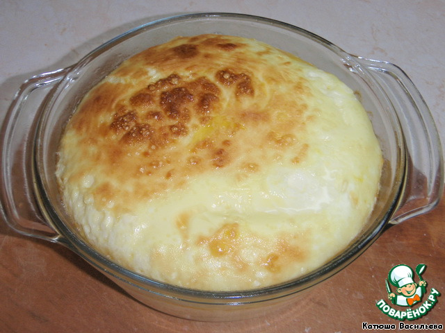
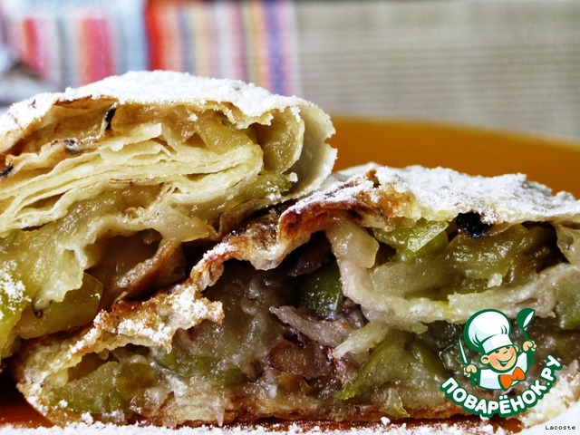
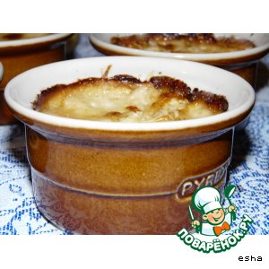
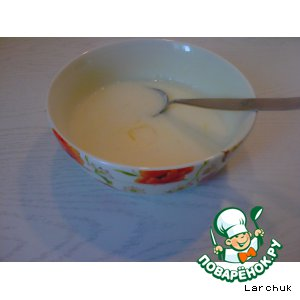

| Название блюда | Оценка | Ссылка на рецепт | Фото блюда |
|---|---|---|---|
| Сливовый пирог из газеты "New York Times" | 10/10 | Рецепт |
|
| Картофельные зразы с фаршем (в духовке) | 10/10 | Рецепт |
|
| Омлет - как в детском саду | 5/10 | Рецепт |  |
| Быстрый штрудель из лаваша | 5/10 | Рецепт |  |
| Жюльен грибной | 8/10 | Рецепт |  |
| Манная каша | 0/10 | Рецепт |  |